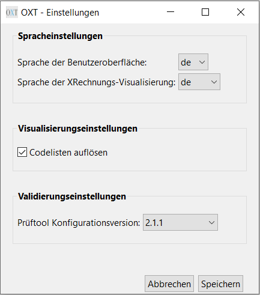

Benutzerhandbuch
Im Folgenden wird die Bedienung der OpenXRechnungToolbox erläutert. Wesentliche Grundlage ist der Standard XRechnung und die zugehörigen technischen Bestandteile.
Inhalt
Installation
Laden Sie das neuste Release der OpenXRechnungToolbox herunter.
Das Ausführen einer Installationsroutine ist für die OpenXRechnungToolbox nicht zwingend erforderlich.
Für Windows Betriebssysteme steht der Komfortabilität wegen dennoch optional eine automatische Installationsroutine zur Verfügung, um u.a. das Programm in das Startmenü einzutragen. In dieser Variante kommt auch ein passendes Java direkt mit.
Es steht, wie für andere Betriebssysteme (Linux, Apple Mac) aber auch für Windows ein einfaches zip-Archiv zur Verfügung, für das keine Installationsroutine durchlaufen werden muss. So kann die Software auch genutzt werden, wenn keine Administrationsrechte auf dem Rechner zur Verfügung stehen.
In diesem Fall laden Sie einfach das zip-Archiv für Ihr Betriebssystem (Windows, Linux oder Apple Mac, jeweils 32- oder 64-bit) herunter und entpacken es an einem beliebigen Ort.
Von dort können Sie dann die Anwendung, wie im Folgenden beschrieben, starten.
Falls Sie unter Windows eine Software zum Entpacken benötigen, können Sie z.B. 7-zip nutzen.
Die OpenXRechnungToolbox Version 3.0.0 benötigt eine Java-Installation Version 9 oder höher. Wenn Sie die Installationsroutine für Windows 64-bit nutzen, wird Java direkt mitgeliefert (daher ist die Dateigröße auch entsprechend umfangreich). Hier entfällt die Voraussetzung, dass eine Java-Installation vorhanden sein muss.
Starten der Anwendung
Unter MS Windows
Für Windows Betriebssysteme steht eine direkt ausführbare Datei (exe) zur Verfügung. Hier starten Sie die OpenXRechnungToolbox durch einen Doppelkick auf die Datei OpenXRechnungToolbox.exe bzw. nach Durchführung der automatischen Installationsroutine durch Auswahl im Windows-Startmenü.
Haben Sie nicht die Variante mit der automatischen Installationsroutine genutzt, dann können finden Sie im entpackten Ordner keine exe-Datei sondern eine jar-Datei.
Ist eine passende Java-Version (>= 9) verfügbar, können Sie die OpenXRechnungToolbox über einen Doppelklick auf die jar-Datei oder im Dos-Fenster bzw. in der PowerShell mittels folgenden Befehl starten:
java -jar OpenXRechnungToolbox.jar "resources/app.config"
Im zip-Archiv finden Sie einen Unterordner exampleInvoices, der verschiedene Testrechnungen enthält, mit denen Sie die Anwendung ausprobieren können, sofern Sie keine eigene Rechnung zur Hand haben.
Für die Benutzung der Prüftools achten Sie auf die richtige Einstellung der Konfigurationsversion. Diese muss zur Rechnung passen. Mehr dazu siehe unter Einstellungen > Prüfbericht.
Unter Linux
Unter Linux starten Sie die OpenXRechnungToolbox durch Ausführen der Datei OpenXRechnungToolbox.sh im Terminal/Console.
Dazu müssen Sie die Datei zunächst ausführbar machen, z.B. durch den Befehl chmod +x OpenXRechnungToolbox.sh.
Alternativ können Sie den Java-Aufruf auch direkt auf der Console/im Terminal eingeben:
java -Dlog4j.configuration=./resources/log4j2.xml -jar OpenXRechnungToolbox.jar --config resources/app.config.
In beiden Fällen muss auf dem Rechner eine Java-Installation (Version >= 9) verfügbar sein.
Im zip-Archiv finden Sie einen Unterordner exampleInvoices, der verschiedene Testrechnungen enthält, mit denen Sie die Anwendung ausprobieren können, sofern Sie keine eigene Rechnung zur Hand haben.
Für die Benutzung der Prüftools achten Sie auf die richtige Einstellung der Konfigurationsversion. Diese muss zur Rechnung passen. Mehr dazu siehe unter Einstellungen > Prüfbericht.
Unter Apple Mac OS
Unter Apple Mac OS starten Sie die Anwendung durch Ausführung des Befehls im Terminal:
java -XstartOnFirstThread -Dlog4j.configuration=./resources/log4j2.xml -jar OpenXRechnungToolbox.jar --config resources/app.config.
Hierfür muss auf dem Rechner eine Java-Installation (Version >= 9) verfügbar sein.
Im zip-Archiv finden Sie einen Unterordner exampleInvoices, der verschiedene Testrechnungen enthält, mit denen Sie die Anwendung ausprobieren können, sofern Sie keine eigene Rechnung zur Hand haben.
Für die Benutzung der Prüftools achten Sie auf die richtige Einstellung der Konfigurationsversion. Diese muss zur Rechnung passen. Mehr dazu siehe unter Einstellungen > Prüfbericht.
Benutzeroberfläche
Die Oberfläche teilt sich in zwei Funktionsbereiche: (1) Die Menüleiste oben rechts und (2) die Drag-and-Drop-Fläche darunter.

Drag-and-Drop Bedienung
Die Drag-and-Drop-Flächen bieten eie schnelle Möglichkeit, für eine oder mehrere Dateien eine menschenlesbare Visualisierung (oben) oder einen Prüfbericht über die Konformität zu Standard XRechnung (unten) zu erzeugen. Dazu werden eine oder mehrere Dateien im Dateisystem (z.B. Explorer) markiert und mit gedrückter Maustaste auf die jeweilige Fläche gezogen. Für jeder Datei wird sodann das angeforderte Ergebnis prozessiert und jeweils in einem neuen Fenster angezeigt (Visualisierung, Prüfbericht).
Menüleiste
Die Menüleiste beinhaltet drei Menüs: (1) Datei, (2) Einstellungen und (3) Hilfe.
Menü Datei
Das Datei-Menü enthält vier Menüpunkte: (1) Rechnung visualisieren, (2) Rechnung prüfen, (4) Leitweg-ID berechnen/prüfen und (5) Schließen.
Mit diesem Menüpunkt kann eine XRechnungsdatei menschenlesbar visualisiert werden. Wir der Menüpunkt ausgewählt, dann öffnet sich ein Dateiauswahl-Dialog. Hier kann eine oder mehrere Dateien zur Visualisierung ausgewählt werden. Die Funktion ist identisch zum Drag-and-Drop auf der Hauptoberfläche (oberer Bereich). Nach der Dateiauswahl wird für jede gewählte Datei eine Visualisierung erzeugt und in einem neuen Fenster geöffnet.
Mit dem Menüpunkt Rechnung prüfen kann eine XRechnungsdatei auf Konformität zum Standard XRechnung geprüft werden. Das Ergebnis wird in einem Prüfbericht angezeigt. Wird der Menüpunkt gewählt, können im sich öffnenden Dateiauswahl-Dialog eine oder mehrere Dateien zur Prüfung ausgewählt werden. Die Funktion ist identisch zum Drag-and-Drop auf der Hauptoberfläche (unterer Bereich). Nach der Dateiauswahl wird für jede gewählte Datei die Prüfung prozessiert und der jeweilige Prüfbericht in einem neuen Fenster geöffnet. Für die Prüfung wird die Prüftoolkonfiguration genutzt, die in den Einstellungen gewählt wurde. Hier kann eine bestimmte Version von XRechnung sowie alternativ Peppol eingestellt werden.
Bei Auswahl dieses Menüpunktes wird ein neues Fenster geöffnet. Hier kann im oberen Teil für eine Grob- ud Feinadressierung die passende Prüfziffer berechnet werden. Im unteren Teil läßt sich umgekehrt für eine vollständige Leitweg-ID testen, ob die angegebene Prüfziffer zur Grob- und Feinadressierung passt. Details zum Konzept und der Verwendung Leitweg-ID finden Sie hier:
Mit dem Menüpunkt CII in UBL konvertieren (experimentell) kann eine XRechnungsdatei in der Syntax UN/CEFACT CII in eine XRechnungsdatei in der Syntax UBL 2.1 konvertiert werden. Wird der Menüpunkt gewählt, können im sich öffnenden Dateiauswahl-Dialog eine oder mehrere Dateien zur Konvertierung ausgewählt werden. Handelt es sich bei der/den gewählten Datei(en) nicht um eine gültige UN/CEFACT CII Instanz, so wird ein Fehler ausgegeben. Bei erfolgreicher Konvertierung wird in dem Quellverzeichnis eine neue Datei erzeugt, die an den Namen der Ursprungsdatei die Zusatz _ubl angehängt hat. Existiert bereits eine Datei mit dem Namen, wird die Konvertierung gestopped. Zudem wird eine Erfolgsmeldung angezeigt. Bei einer fehlerhaften Konvertierung wird ein Fehlerfenster angezeigt. Die Funktion ist experimentell.
Über den Menüpunkt Schließen kann die Anwendung beendet werden. Alternativ kann dies auch durch Klick auf das Kreuz oben links geschehen. Alle geöffneten Visualisierung- und Prüffenster werden sodann ebenfalls geschlossen.
Menü Einstellungen
Das Menü Einstellungen beinhaltet lediglich einen Menüpunkt Einstellungen ändern.
Bei Auswahl des Menüpunktes Einstellungen ändern öffnet sich ein neues Fenster, in dem einige Einstellungen für die Funktionsweise der Software vorgenommen werden. Dazu gehören im Moment: (1) Ändern der Sprache der Benutzeroberfläche, (2) Auflösen von Codelisten bei der Erzeugung der Visualisierung und (3) Auswahl der XRechnungsversion, gegen die die Konformitätsprüfung erfolgen soll. Weitergehende Erläuterungen:

Die Auswahl der Sprache erfolgt auf Basis des Länder-/Sprachcodes (z.B. de für Deutsch, en für Englisch). Es stehen die Sprachen zur Auswahl, die in der Konfigurationsdatei definiert sind und für die entsprechende Sprachdateien vorliegen. Weitere Sprachen können selbstständig ergänzt werden. Siehe hierzu die Dokumentation. Derzeit stehen keine Übersetzungen zur Verfügung, auch wenn die Auswahl von Englisch bereits vorbereit ist. Zulieferungen sind herzlich Willkommen.
Die Auswahl der Sprache erfolgt auf Basis des Länder-/Sprachcodes (z.B. de für Deutsch, en für Englisch; de-bt für einen Sondertyp, bei dem die Business Terms in Klammern ergänzt sind). Es stehen die Sprachen zur Auswahl, die in der Konfigurationsdatei definiert sind und für die entsprechende Sprachdateien vorliegen. Weitere Sprachen können selbstständig ergänzt werden. Siehe hierzu die Dokumentation.
Für die Visualisierung werden die über die KoSIT bereitgestellten Visualisierungskomponenten eingesetzt. Allerdings gibt es in der XRechnung verschiedene Informationselemente, in denen die Inhalte nicht in menschenlesbarer Form gespeichert sind, sondern in Form von maschinenlesbaren Codes. Die Visualisierungskomponenten, die von der KoSIT bereitgestellt werden, stellen lediglich die Codes dar, die zumeist nicht selbsterklärend sind. Daher wurde für die OpenXRechnungToolbox eine Erweiterung geschaffen, die für die Codes ergänzend auch die in den offizellen Codelisten angegebenen Bezeichnungen der Codes in Klamern in die Visualisierung einfügt. Es werden also ausschließlich Ergänzungen in der Visualisierung vorgenommen. Diese Option der Codelistenauflösung kann durch die Checkbox Codelisten auflösen aktiviert werden. Da keine offiziellen Übersetzung des Codelisten vorliegen, werden die Bezeichnungen der Codes nur auf Englisch ausgegeben. Eine Erläuterung, wie dies technisch umgesetzt wurde, bzw. einen Link dorthin, finden Sie in der Dokumentation.
Die KoSIT veröffentlicht mit jeder neuen Version der XRechnung, die Veränderungen am Datenmodell bzw. den Geschäftsregeln mit sich bringt, eine neue Version der Prüftoolkonfiguration. Wenn Sie gezielt eine XRechnungsinstanz gegen eine bestimmte Konfigurationsversion testen wollen, dann können Sie hier die entsprechende Version auswählen. Im Standardumfang der OpenXRechnungToolbox werden direkt verschiedene Versionen der Konfiguration mitgeliefert und stehen zur Auswahl bereit. Ergänzend steht hier auch eine Prüfungskonfiguration für Peppol Rechnungen zur Auswahl. Wie hier bei Bedarf weitere Versionen hinterlegt werden können, ist in der Dokumentation beschrieben.
Visualisierung
Wurde über das Menü oder per Drag-and-Drop eine Visualisierung angefordert, so wird das Ergebnis in einem neuen Fenster dargestellt. Die Prozessierung dauert einen Moment. In dieser Zeit ist die Anwendung blockiert und steht erst nachdem sich das neue Fenster geöffnet hat wieder zur Verfügung. Im Inhaltsbereich des Visualisierungsfensters finden Sie die menschenlesbar Darstellung der XRechnung oder einen Hinweis, dass die Visualisierung wegen eines Verarbeitungsfehlers nicht prozessiert werden konnte (z.B. wenn es sich um eine XML-Datei handelt, die keine XRechnungsinstanz ist). Das Fenster können Sie in der Größe anpassen sowie über das Kreuz oben rechts (je nach Betriebssystem) schließen. Zudem können Sie durch gleichzeitiges Drücken der Tasten "Strg" und "+" die Textdarstellung vergrößern sowie über "Strg" und "-" verkleinern. Über "Strg" und "0" setzen Sie die Größeneinstellung auf den Ursprung zurück. In der Titelzeile des Fensters sehen Sie den Dateinamen der Datei, die in diesem Fenster visualisiert ist. In den Einstellungen im Hauptfenster können Sie konfigurieren, ob Codes, die aus Codelisten stammen, zusammen mit ihrer Beschreibung dargestellt werden sollen (Codelistenauflösung). Ist diese Option aktiviert, so wird für jeden Code in Klammern zusätzlich die Bezeichnung aus der entsprechenden Codeliste mit ausgegeben. Diese Einstellung wird auch beim Speichern sowie bei der Erzeugung einer PDF-Darstellung angewendet.

Der Inhaltsbereich besitzt im oberen Teil fünf Reiter: (1) Übersicht, (2) Details, (3) Zusätze, (4) Anlagen, (5) Laufzettel. Hier können Sie verschiedenen Inhaltsbereiche innerhalb der HTML-Visualisierung umschalten. Bei längeren Informationsinhalten erreichen Sie die unteren Bereiche durch die Scrollleiste an der linken Seite. Im Bereich Laufzettel werden für gewöhnlich keine Einträge enthalten sein, da dieser Bereich derzeit nur innerhalb der Bundesverwaltung benutzt wird. Im Bereich Anlagen können Sie die ggf. in der XML-Rechnung eingebetteten rechnungsbegründenden Anlagen öffnen oder finden dort ein URL für den Download der Anlage.
Wenn Sie die Maus einen Moment über ein Inhaltselement der Visualisierung halten, dann wird Ihnen in einem Tooltip die ID des entsprechenden semantischen Informationselementes angezeigt (z.B. BT-10). Diese IDs finden Sie in der Spezifikation des Standards XRechnung wieder und können dort nachsehen, welcher Inhalt gem. der Spezifikation in diesem Element überittelt werden darf.
Menüleiste
Die Menüleiste des Visualisierungsfensters besitzt lediglich zwei Menüs: (1) Datei und (2) Hilfe.
Menü Datei
Dieses Menü besitzt vier Menüpunkte: (1) Gewählte Rechnung prüfen, (2) Speichern, (3) Speichern als, (4) Speichern als PDF und (5) Schließen.
Menüpunkt Gewählte Rechnung prüfen
Mit Hilfe dieses Menüpunktes kann für die aktuell visualisierte Rechnung direkt ein Prüfbericht angefordert werden, ohne dass die Rechnung nochmal aus dem Dateisystem ausgewählt werden muss. Der Prüfbericht wird in einem neuen Fenster geöffnet. Wenn Sie den Punkt auswählen, dann haben Sie bitte einen Moment Geduld. Die Prüfung dauert einen kleinen Moment. In dieser Zeit ist die Anwendung blockiert.
Menüpunkt Speichern
Bei Auswahl dieses Menüpunktes wird die Visualisierung in einer HTML-Datei in das Verzeichnis gespeichert, in dem auch die Rechnung liegt.
Es wird eine Datei erzeugt mit dem Namen
Menüpunkt Speichern als
Dieser Menüpunkt ist ähnlich zum Menüpunkt Speichern, nur dass hier die Speicherort und der Dateiname in einem Dialog selbst gewählt werden kann.
Menüpunkt Speichern als PDF
Mit der Auswahl dieses Menüpunkts wird eine PDF-Visualisierung der Rechnung erzeugt. Diese ist vom Aufbau her ähnlich zur HTML-Visualisierung, listet aber nur die gefüllten Informationsfelder. Wie bei Speichern als ist hier der Speicherort und der Dateiname in einem Dialog zu wählen.

Menüpunkt Schließen
Durch Auswahl dieses Menüpunktes wird das Visualisierungsfenster geschlossen.
Menü Hilfe
Dieses Menü besitzt nur einen Menüpunkt: Hilfe öffnen.
Menüpunkt Hilfe öffnen
Hierüber wird das vorliegende Benutzerhandbuch geöffnet.
Prüfbericht
Wurde über das Menü oder per Drag-and-Drop ein Prüfbericht angefordert, so wird das Ergebnis in einem neuen Fenster dargestellt. Die Prozessierung der Prüfung dauert einen Moment. In dieser Zeit ist die Anwendung blockiert und steht erst nachdem sich das neue Fenster geöffnet hat wieder zur Verfügung. Im Inhaltsbereich des Prüfberichts finden Sie zunächst einige Angaben zum geprüften Dokument gefolgt vom zusammenfassenden Prüfergebnis mit Handlungsempfehlung. Diese Bewertung basiert auf den von der KoSIT, als Herausgeberin der Standards XRechnung, festgelegten Bewertungskriterien. Fehler führen hier zu einer Ablehnung des Dokuments, während Warnung durchgelassen werden. Sofern Fehler oder Warnungen auftreten, sind diese nach der Bewertung aufgeführt, jeweils mit einer Referenz auf die nicht erfüllte Prüfregel, die in der Spezifikation nachgeschlagen werden kann. Darunter folgt eine syntaxneutrale Aufstellung der für die Prüfung zugrunde gelegten Rechnungsinhalte.
Konnte die Prüfung nicht prozessiert werden, so wird - in Abhngigkeit vom Grund des Fehlers der Version des Prüftools - entweder das sog. "Fallback-Szenario" für die Prüfung verwendet oder im Prüfbericht ausgegeben, dass es sich nicht um eine valide Rechnungsinstanz der zulässigen Spezifikationen handelt. Oder es wird im Fenster nur ein Fehler ausgegeben, wenn die Datei überhaupt nicht prozessiert werden konnte. Die für die Prüfung zugrunde gelegte Konfigurationsversion kann im Hauptfenster unter Einstellungen gewählt werden.
Das Fenster können Sie in der Größe anpassen sowie über das Kreuz oben rechts (je nach Betriebssystem) schließen. Zudem können Sie durch gleichzeitiges Drücken der Tasten "Strg" und "+" die Textdarstellung vergrößern sowie über "Strg" und "-" verkleinern. Über "Strg" und "0" setzen Sie die Größeneinstellung auf den Ursprung zurück. In der Titelzeile des Fensters sehen Sie den Dateinamen der Datei, für die das Prüfergebnis die in diesem Fenster angezeigt ist.

Menüleiste
Die Menüleiste des Prüfberichtfensters besitzt lediglich zwei Menüs: (1) Datei und (2) Hilfe.
Menü Datei
Diese Menü besitzt vier Menüpunkte: (1) Gewählte Rechnung visualisieren, (2) Speichern, (3) Speichern als und (4) Schließen.
Menüpunkt Gewählte Rechnung visualisieren
Mit Hilfe dieses Menüpunktes kann für die aktuell geprüfte Rechnung direkt die Visualisierung angefordert werden, ohne dass die Rechnung nochmal aus dem Dateisystem ausgewählt werden muss. Die Visualisierung wird in einem neuen Fenster geöffnet. Wenn Sie den Punkt auswählen, dann haben Sie bitte einen Moment Geduld. Die Erzeugung der Visualisierung dauert einen kleinen Moment. In dieser Zeit ist die Anwendung blockiert.
Menüpunkt Speichern
Bei Auswahl dieses Menüpunktes wird der Prüfbericht in einer HTML-Datei in das Verzeichnis gespeichert, in dem auch die Rechnung liegt.
Es wird eine Datei erzeugt mit dem Namen
Menüpunkt Speichern als
Dieser Menüpunkt ist ähnlich zum Menüpunkt Speichern, nur dass hier die Speicherort und der Dateiname in einem Dialog selbst gewählt werden kann.
Menüpunkt Schließen
Durch Auswahl dieses Menüpunktes wird das Prüfberichtfenster geschlossen.
Menü Hilfe
Dieses Menü besitzt nur einen Menüpunkt: Hilfe öffnen.
Menüpunkt Hilfe öffnen
Hierüber wird das vorliegende Benutzerhandbuch geöffnet.
Leitweg-ID-Berechnung/-Prüfung
Das Schema der sog. Leitweg-ID wird im Kontext der XRechnung an zwei Stellen verwendet:
(1) im semantische Informationselement BT-10 (Buyer Reference) für die interne Verarbeitung beim Käufer
(2) als Schema der Participant ID bei der Adressierung im Transportnetzwerk Peppol.
Mit dem hier angebotenen Tool können Sie zu einer Grob- und Feinadressierung die passende Prüfziffer berechnen sowie für eine vorhandere vollständige Leitweg-ID die Prüfziffergültigkeit überprüfen.
Zu dem Tool gelagen Sie über das Menü des Hauptfensters: Datei - Leitweg-ID berechnen/prüfen. Es öffnet sich ein neues Fenster.
Diese teilt sich in die Menüleiste und den Inhaltsbereich.

Der Inhaltsbereich wiederum gliedert sich zwei Abschnitte:
(1) oben: Prüfziffer berechnen, (2) unten: Leitweg-ID prüfen.
Für die Berechnung der Prüfziffer müssen Sie die Grob- und die Feinadressierung ohne die Trennzeichen angeben. Mit Klick auf den Button Prüfziffer berechnen erscheint im Feld darüber die entsprechende Prüfziffer.
Für die Prüfung einer Leitweg-ID geben Sie die Grob- und Feinadressierung sowie die Prüfziffer an - ebenfalls ohne Trennzeichen - und drücken auf den Button Leitweg-ID prüfen. Sodann wird ihnen darunter angezeigt,
ob die Fein- und Grobadressierung zur Prüfziffer passen.
Menüleiste
Das Menü dieses Fensters enthält nur zwei Menüs: (1) Datei und (2) Hilfe.
Menü Datei
Das Menü Datei enthält nur einen Menüpunkt: Schließen.
Menüpunkt Schließen
Hierüber wird das Fenster geschlossen.
Menü Hilfe
Dieses Menü besitzt ebenfalls nur einen Menüpunkt: Hilfe öffnen.
Menüpunkt Hilfe öffnen
Hierüber wird das vorliegende Benutzerhandbuch geöffnet.
Kommandozeilen-Modus (CLI)
Die Basisfunktionalitäten (Validierung, Visualisierung, Konvertierung) können auch ohne graphische Benutzeroberfläche über die Kommandozeile ausgeführt werden. Die funktioniert sowohl mit der .exe-Datei (OpenXRechnungToolbox.exe) als auch - bei installiertem und auf der Kommandozeile verfügbaren Java-Runtime - mit der .jar-Datei (OpenXRechnungToolbox.jar). Zu beachten ist allerdings, dass Rückmeldungen zur Nutzung, Fehlern etc. nur bei der Variante mit der .jar-Datei sichtbar werden. Es kann mit einem Aufruf jeweils nur eine Funktionalität ausgeführt werden. Soll z.B. eine Rechnung sowohl validiert als auch visualisiert werden, so sind zwei Aufrufe erforderlich.
Die Hilfe kann mit dem Kommandozeilen-Parameter -h bzw. --help aufgerufen werden.
java -Dlog4j.configuration=./resources/log4j2.xml -jar OpenXRechnungToolbox.jar -h
Validierung im Kommandozeilen-Modus
Mit dem Kommandozeilen-Parameter -val bzw. --validation kann die Validierungsfunktion genutzt werden. Der Kommandozeilen-Aufruf für die Validierung einer Rechnung kann dann z.B. wie folgt aussehen:
Mit der .jar-Datei:
java -Dlog4j.configuration=./resources/log4j2.xml -jar OpenXRechnungToolbox.jar -val -i exampleInvoices\XRechnung_v3.0.2\01.01a-INVOICE_ubl.xml -o testreport1.html -v 3.0.2.
Mit der .exe-Datei:
OpenXRechnungToolbox.exe -val -i exampleInvoices\XRechnung_v3.0.2\01.01a-INVOICE_ubl.xml -o testreport1.html -v 3.0.2.
Die Parameter sind:
-i bzw. --input: Pfad zu der zu validierenden Rechnung
-o bzw. --output: Pfad unter dem der Report gespeichert werden soll
-v bzw. --valiversion: Spezifikation der Prüftoolkonfiguration, gegen die die Rechnung validiert werden soll. Zulässige Werte finden sich in der Variable available_valiVersions aus der Datei resources/app.config.
Visualisierung im Kommandozeilen-Modus
Mit dem Kommandozeilen-Parameter -viz bzw. --visualization kann die Visualisierungsfunktion genutzt werden. Der Kommandozeilen-Aufruf für die Visualisierung einer Rechnung kann dann z.B. wie folgt aussehen:
Mit der .jar-Datei:
java -Dlog4j.configuration=./resources/log4j2.xml -jar OpenXRechnungToolbox.jar -viz -i exampleInvoices\XRechnung_v3.0.2\01.01a-INVOICE_ubl.xml -o tesviz.html.
Mit der .exe-Datei:
OpenXRechnungToolbox.exe -viz -i exampleInvoices\XRechnung_v3.0.2\01.01a-INVOICE_ubl.xml -o tesviz.html.
Dies erzeugt eine HTML-Visualisierung der elektronischen Rechnung. Es ist mit dem Zusatzparameter -p bzw. --pdf möglich eine PDF-Visualisierung anstelle der HTML-Visualisierung zu erzeugen. Ein solcher Aufruf kann z.B. so aussehen:
Mit der .jar-Datei:
java -Dlog4j.configuration=./resources/log4j2.xml -jar OpenXRechnungToolbox.jar -viz -i exampleInvoices\XRechnung_v3.0.2\01.01a-INVOICE_ubl.xml -o tesviz.pdf -p.
Mit der .exe-Datei:
OpenXRechnungToolbox.exe -viz -i exampleInvoices\XRechnung_v3.0.2\01.01a-INVOICE_ubl.xml -o tesviz.pdf -p.
Die Parameter sind:
-i bzw. --input: Pfad zu der zu visualisierenden Rechnung
-o bzw. --output: Pfad unter dem die Visualisierung gespeichert werden soll
-p bzw. --pdf: optionaler Parameter; wenn angegeben, dann wird eine PDF-Visualisierung anstelle einer HTML-Visualisierung erzeugt
Konvertierung von CII zu UBL im Kommandozeilen-Modus
Mit dem Kommandozeilen-Parameter -con bzw. --conversion kann die Konvertierungsfunktion von CII zu UBL genutzt werden. Der Kommandozeilen-Aufruf für die Konverztierung einer CII-Rechnung kann dann z.B. wie folgt aussehen:
Mit der .jar-Datei:
java -Dlog4j.configuration=./resources/log4j2.xml -jar OpenXRechnungToolbox.jar -con -i exampleInvoices\XRechnung_v3.0.2\01.01a-INVOICE_uncefact.xml -o convertedFromCII.xml.
Mit der .exe-Datei:
OpenXRechnungToolbox.exe -con -i exampleInvoices\XRechnung_v3.0.2\01.01a-INVOICE_uncefact.xml -o convertedFromCII.xml.
Die Parameter sind:
-i bzw. --input: Pfad zu der zu konvertierenden CII-Rechnung
-o bzw. --output: Pfad unter dem die erzeugte UBL-Rechnung gespeichert werden soll